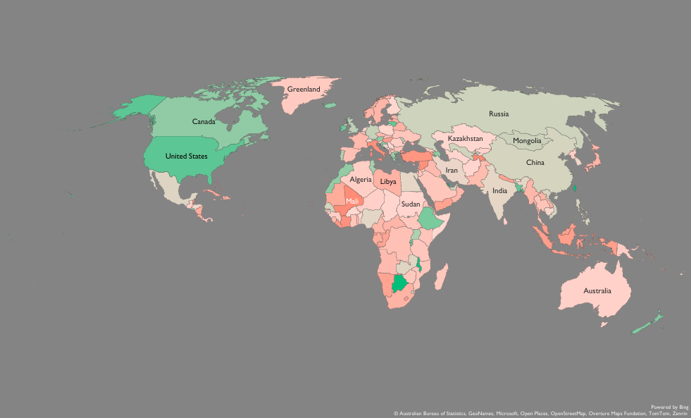

Global Sales Performance Analysis

Project Overview
This project analyzes global sales transactions from 2014 to 2021 to evaluate
business performance across regions, product categories, and sales channels.
The goal was to identify revenue drivers, profitability trends, cost efficiency,
and growth opportunities that can support strategic business decisions.
Using Excel , Power Query , Power Pivot , and DAX , an interactive dashboard was
developed to monitor key performance indicators including Revenue, Profit,
Cost of goods sold (COGS) , Profit Margin, Growth Rate , and Return on Cost(ROC) . The analysis provides
a comprehensive view of business performance and highlights opportunities
for improving profitability and resource allocation.
Dataset Overview
The dataset contains global sales transactions between 2014 and 2021
across multiple regions, countries, product categories, and sales channels.
The analysis focuses on measuring revenue growth, profitability,
cost efficiency, and business performance trends.
Tools & Technologies
- Microsoft Excel
- Power Query
- Power Pivot
- DAX (Data Analysis Expressions)
- Pivot Tables
- Interactive Dashboard Design
Key Performance Indicators (KPIs)
- Total Revenue
- Total Profit
- Cost of Goods Sold (COGS)
- Profit Margin (%)
- Return on Cost (ROC)
- Year-over-Year Growth
- Order Contribution
- Revenue Contribution by Region
Business Questions Answered
- Which regions generate the highest revenue?
- Which regions are the most profitable?
- Which product categories drive profit growth?
- How efficiently are costs converted into profit?
- Which markets should receive additional investment?
- Which categories require cost optimization?